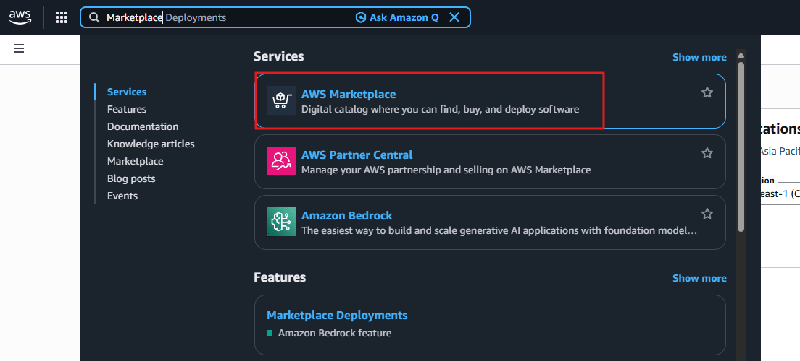
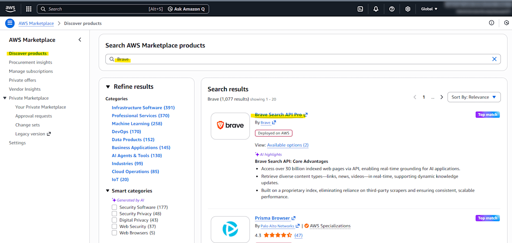
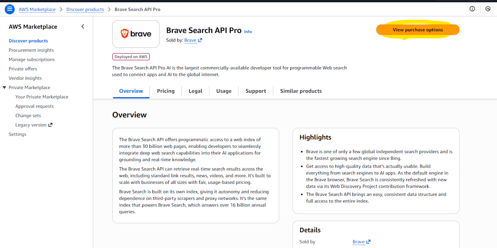
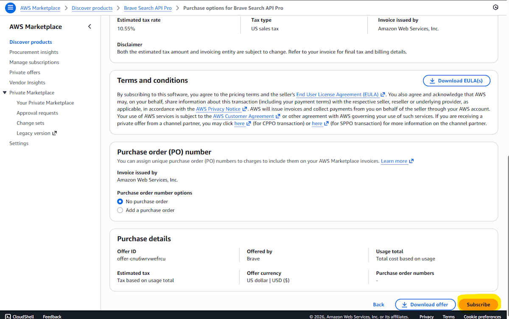
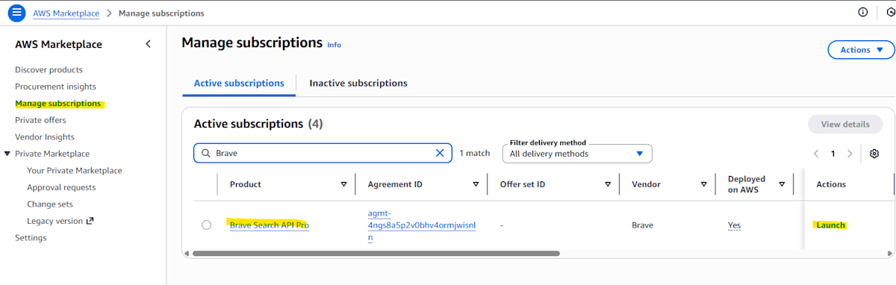
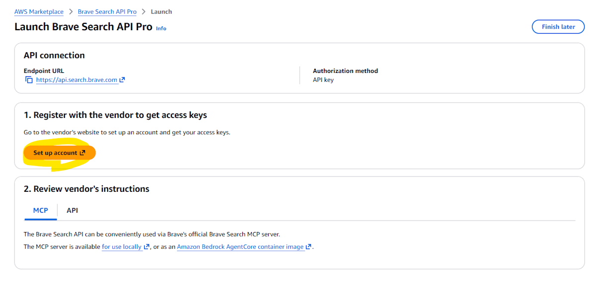
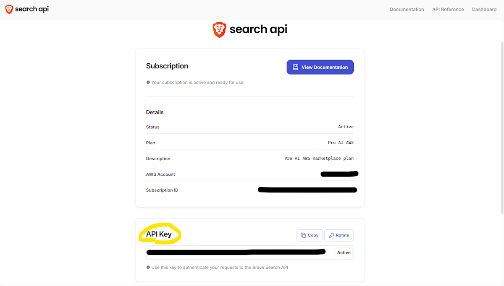
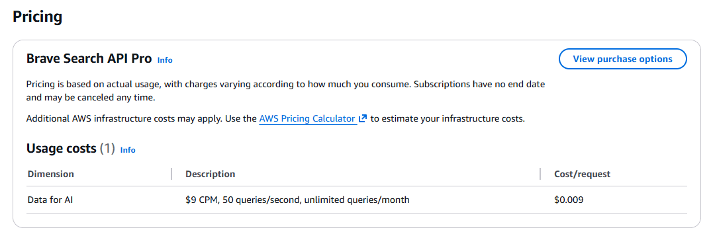

리서치 에이전트 유스케이스 배포 가이드¶
리서치 에이전트란¶
리서치 에이전트는 AWS Bedrock AgentCore Runtime을 사용한 고급 리서치 기능입니다. 웹 검색 및 AWS 문서 검색을 활용하여 기술 조사, 비즈니스 분석, 문제 해결을 위한 정보 수집을 자동화합니다.
주요 기능¶
- 웹 검색: Brave Search API를 사용한 실시간 웹 검색
- AWS 문서 검색: AWS 공식 문서에서 정보 검색
- 3가지 리서치 모드:
- Technical Research（기술 조사）- 상세한 기술 분석
- General Research（일반 조사）- 비즈니스 분석
- Mini Research（간편 조사）- 신속한 정보 검색
Brave Search API 키 획득¶
리서치 에이전트를 사용하려면 Brave Search API 키가 필수입니다. AWS Marketplace를 통해 획득하면 AWS 청구서에 포함되어 사내 청구 처리가 간소화됩니다.
AWS Marketplace에서 API 키 획득 절차¶
1. AWS Marketplace 열기¶
AWS Marketplace에 액세스합니다.

2. Brave 검색¶
검색 상자에 "Brave"를 입력하여 검색합니다.

3. View purchase options 선택¶
Brave Search API 제품 페이지에서 "View purchase options" 버튼을 클릭합니다.

4. Subscribe 실행¶
"Subscribe" 버튼을 클릭하여 구독을 시작합니다.

5. Manage Subscriptions에서 Launch¶
"Manage Subscriptions" 페이지로 이동하여 Brave 행의 "Launch" 버튼을 클릭합니다.

6. Setup Account¶
"Setup Account" 버튼을 클릭합니다.

7. API 키 획득¶
Brave API 키가 표시됩니다. 이 키를 복사하여 안전하게 보관하세요.

Important
API 키는 한 번만 표시될 수 있습니다. 반드시 안전한 장소에 저장하세요.
배포 설정¶
획득한 API 키를 GenU 설정 파일에 추가합니다.
parameter.ts 사용 시¶
packages/cdk/parameter.ts 편집:
// parameter.ts
const envs: Record<string, Partial<StackInput>> = {
dev: {
researchAgentEnabled: true,
researchAgentBraveApiKey: 'YOUR_BRAVE_API_KEY', // 획득한 API 키
researchAgentTavilyApiKey: '', // 선택 사항
},
};
cdk.json 사용 시¶
packages/cdk/cdk.json 편집:
{
"context": {
"researchAgentEnabled": true,
"researchAgentBraveApiKey": "YOUR_BRAVE_API_KEY",
"researchAgentTavilyApiKey": ""
}
}
배포 실행¶
설정 파일 편집 후 다음 명령으로 배포합니다:
npm run cdk:deploy
배포에는 약 20분이 소요됩니다. 배포 완료 후 GenU 상단 페이지에 "리서치" 유스케이스가 표시됩니다.
자세한 설정 옵션은 배포 옵션을 참조하세요.
Brave 요금¶
- 1000회 웹 검색당 9 USD
- 초당 50회 검색 요청 제한
- 월간 제한 없음
자세한 내용은 Marketplace의 Brave 페이지에서 확인할 수 있습니다.

참고 링크¶
자세한 절차 및 동작 확인 방법은 다음 블로그 기사를 참조하세요: